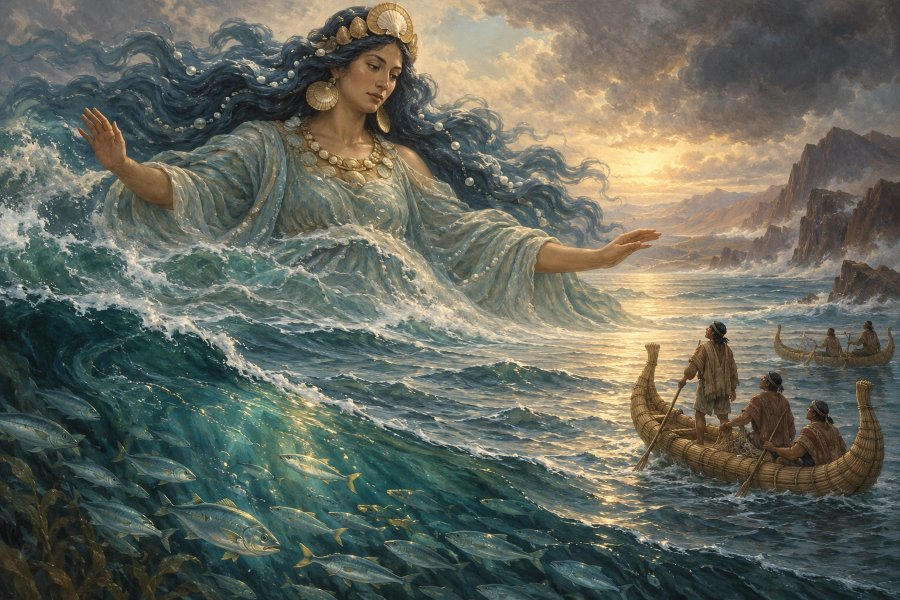

インカ神話・神
ママ・コチャ
「漁師と船乗りを守る海の母」
⛩️ あなたの正体も診断する（無料）本質
海そのものとされ、漁師や船乗りを守ってきたインカの海の母神。荒波を鎮め、海の恵みを人々に分け与えると信じられました。あなたも、大きな心で人を受け入れ、恵みを分かち合う人です。
- ✨ 長所
- どんな人も受け入れる大らかさと、困った人を放っておけない優しさがあります。
- ⚠️ 短所
- 気分の波が大きく、穏やかな日と荒れる日の差が出やすいことも。
- 💞 恋愛・人間関係
- 大きな愛で相手を包むタイプ。一緒にいると安心できる、海のような存在です。
- 💼 仕事・才能
- 水産や食、旅行・観光、福祉など、人に恵みを届ける仕事に向いています。